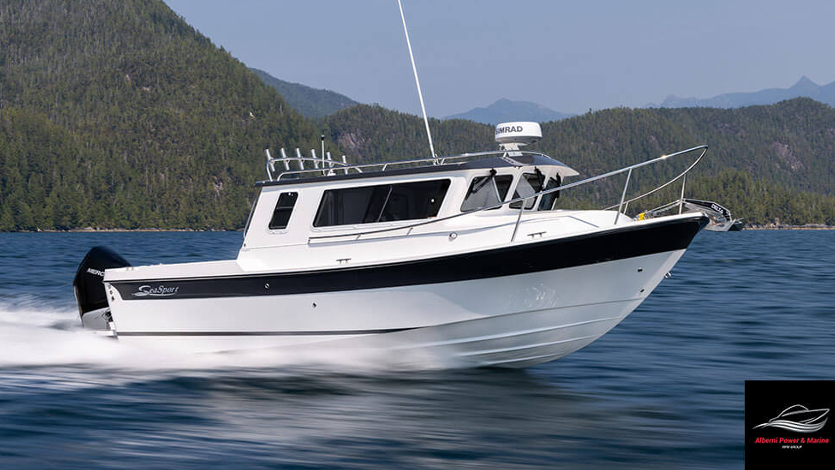

B-Atlas Boat Guide · SSPT-24-EX
Sea Sport Explorer 2400 Long-Cabin Pilothouse
From 1995
The Sea Sport Explorer 2400 is the more accommodation-focused 24-foot Sea Sport hardtop, using the same trailerable-width deep-V concept with a longer cabin, enclosed stand-up head and smaller cockpit than the XL 2400. Current production uses outboard power; older Explorer 2400s include diesel and gasoline sterndrive examples.

- Length
- 24 ft
- Beam
- 8.5 ft
- Draft
- 1.83 ft
- Hull behaviour
- Planing
- Fuel
- Mixed Diesel/Gasoline
- Propulsion
- Outboard
- Engine configuration
- Single outboard on current production; older boats include gasoline and diesel sterndrive installations
- Boat family
- Cruiser
- Construction
- Fiberglass
Best for
- Couples wanting more cabin comfort than the XL 2400
- Pacific Northwest cruising with occasional fishing
- Owners needing an all-weather 24-foot cruiser
Trade-offs
- Smaller cockpit than the XL 2400
- Propulsion differs materially by production era
- Compact cruiser accommodations remain modest compared with wider boats
Known concerns
- No model-specific concern has been promoted to B-Atlas’s evidence threshold. This does not mean the model has no age-, condition- or hull-specific risks.
Inspection focus
- Inspect hull/deck structure and hardtop/window sealing
- Verify exact propulsion installation and service history for the model year
- Inspect outboard bracket/transom or sterndrive transom assembly as applicable
- Confirm tank capacities, head arrangement and factory/owner modifications
Continue researching
Related boat models
Sea Sport XL 2400 Long-Cockpit Pilothouse
24 ft · Planing
Sea Sport 27 Seamaster / Navigator / Pilot
26.5 ft · Planing
Beneteau Antares 7 Cruising / Fishing
24.5 ft · Planing
Bayliner 2452 Ciera Express Hardtop Cruiser
23.42 ft · Planing
Albin 25 Motor Cruiser
25 ft · Displacement
C-Dory 25 Cruiser Cruiser
25.42 ft · Semi-Displacement
About this record
B-Atlas preserves uncertainty: missing information remains unknown rather than being treated as a negative. Specifications and guidance describe the model record; individual boats can differ by year, equipment, refit and condition.